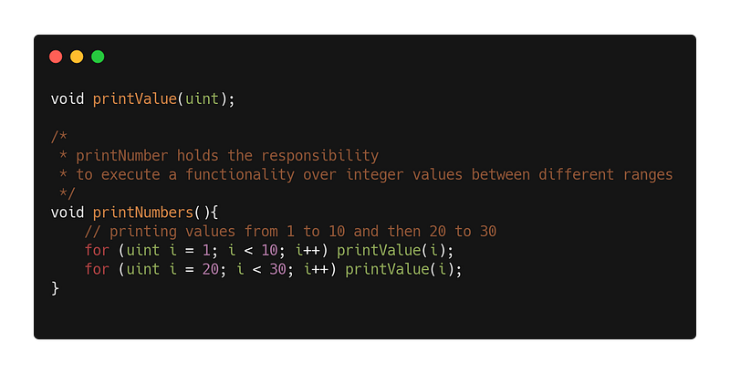
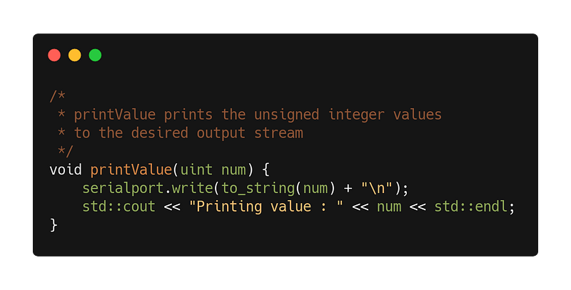

Development of a software product is a complex and comprehensive process which involves certain expertise, multiple integration, collaboration tools and a well-designed development cycle. Apart from all of this, building the code base of the product ie. the software itself requires the maximum time and effort which sometimes. During the course of the last two decades, it was observed that some issues reoccur in most of the projects due to some faulty approaches taken by the developers.
Thus, some computer genius developed certain software development principles using their knowledge and years of experience. Out of an enormous pool such theories and principles, the most useful and famous ones are discussed in this story.
DRY
Don’t Repeat Yourself is a rule which prescribes that a functionality should never be coded repeatedly rather should be invoked from a single source. It promotes that the functionality should be defined in specified boundaries so as to make the modification easier and bug free.
If the code is kept DRY then it will ensure that whenever the developer needs to modify the functionality, modifications should be made only once within a specific region where functionality is defined rather than modifying multiple copies of the same functionality.
SLAP
Single Layer Of Abstraction Principle states that the statments with in a program unit should have the same abstraction level.
In simple terms, taking an example of a programming printing unsigned integers from 1 to n. The printNumbers() is a function which prints the number repeatedly in a loop ranging from 1 to 10 firstly and then 20 to 30 and hence all the statement in the function are at same abstraction level.


The function printNumbers() does not perform the task of printing the number at console. The task of printing the data to the output stream is at another abstraction level which is being handled by function printValue(). This method prints the number by writing bytes to a serial port and then printing to the console
So next time, don’t forget to SLAP your code in order to improve the readability and ease of predicting the flow of control.
GRASP
“You should GRASP your code” is a phrase generally used by developers while having a conversation about structuring the code well. GRASP stands for General Responsibility Assignment Software Patterns (or Principles). It has a set of 9 patterns named as following
- Creator
- Controller
- Low Coupling
- High Cohesion
- Polymorphism
- Information Expert
- Indirection
- Pure Fabrication
- Protected Variation
CREATOR
A creator object holds the responsibility of creating the contained objects. Developer should prejudge which can be the creator based on the objects association and their interaction.
For example, Consider entities as VideoStore and Video in that store. VideoStore has an aggregation association with Video ie. VideoStore is the container and Video is the contained object. So instatiation of Video entity should be handled via VideoStore only.
CONTROLLER
Controller holds the responsibility of delegating the request from UI layer to the domain specific layer. It deals with the upcoming request from GUI and transfers the data and control to the various objects of domain as per the user case flow in order to fullfil the request.
One thing to keep in mind while developing a controller that it should not be overwhelmed with too much responsibilities of different kinds else it will become BLOATED CONTROLLER.
LOW COUPLING
Coupling in the world of software represents the extent to which program entities are intertwined. When a software holds multiple modules or entities which have certain associations in such a manner that any change in structure of one entity may drastically affect the structure of other entity then they can be termed as highly coupled entities.
Coupling is a non desirable characteristic as it reduce the degree of flexibility and make the design harder to maintain over the years. Though coupling can be reduced but cannot be entirely eliminated as per my experience. Low coupling is desirable as it makes the developer’s life easier and protects the software architecture from getting financially unviable over the years of modification.
Interfaces and smartly implemented inheritance can help in reducing coupling in the code. One should focus on design the software architecture which is highly modular to the extent where it maintains low coupling.
HIGH COHESION
In software domain, Cohesion can be defined as degree of closeness within a program entity. Unlike coupling, cohesion is desirable as it keep the individual program units intact. Certain principles are also defined to promote cohesion such as CRP (Common Reuse Principle )and CCP (Common Closure Principle).
High cohesion make the entity common to any modification ie. if a portion of highly cohesive entity is modified then other portions of the same entity should undergo modification. It also keeps the entity synchronised in itself and does not let it break due to any minor change. High cohesion can increase the lifespan of an entity by keeping it useful for a longer period of time.
POLYMORPHISM
Polymorphism is derived from word polymorph which can further be divided in two words poly and morph. Poly means many and morph means states. Polymorphism is characteristic that ensures that a program entity can exit in more than one state.
It is a very useful characteristic which allows the software unit to perform multiple procedures under the same nomenclature. Polymorphism can be broadly classified as
- Static Polymorphism
- Dynamic Polymorphism
Static Polymorphism is a compile time polymorphism where the polymorphic nature is designed statically in the code. Overloading and templates are the example of static polymorphism.
Dynamic Polymorphism is a runtime polymorphism where polymorphic nature is induced in the code at runtime. It is a little tricky to handle in comparison to static polymorphism but offers much power to the developer. Overriding is an example of dynamic polymorphism
Polymorphism is directly proportional to the degree of reusability.
INFORMATION EXPERT
While implementing GRASP as the name says General Responsibility Assignment Software Principle. Assignment of responsibility is the critical part in GRASP apart from just defining the responsibility. Question arrises ‘Responsibility should be assigned to which entity and why? ’
Information Expert states that responsibility should be assigned to the entity which has the most amount of information to fulfil that particular responsibility.
In some cases, multiple entities hold the necessary information, then all of them may collaborate with each other to fulfil that responsibility.
INDIRECTION
Direct interaction of two entities can be avoiding by using Indirection principle in order to reduce coupling. Indirection can be achieved by deploying an intermediate unit through which data and control flows. This intermediate entity makes the two adjoining entities loosely coupled and while direct the control in the desired direction.
Some design patterns promote indirection such as Adapters, Observer etc.
PURE FABRICATION
Pure fabrication as name suggests , stands for a plain programmed objects that are fabricated purely over data and is not specific to some technology. Such pure fabrications can be reused in different technologies as it does not represent any domain object.
Low coupling, high cohesion and reusability are the benefits of pure fabrication.
PROTECTED VARIATION
In order to keep the software economically viable without breaking for a long time , design should avoid impact of variations of some elements on the other elements ie. Protected Variation. It provides a well defined interface so that the there will be no affect on other units. Protected variation provides flexibility and robustness.It can be achieved via smartly implemented polymorphism and use of interfaces
CONCLUSION
There are tons of software principles , patterns and rules spreads across number books and articles which should ideally be followed in order to develop a good software yet using each and everyone of them is nearly impossible.
There is also a fact worth mentioning that over the years several software principles get outdated with the enhancement in the technology. For example, set of software principles used by the developers in 1990 may not be applicable on a modern day hybrid mobile application code base which is using OOPS as its programming paradigm along with BLOC for its state management. Hence validity of software principle should be taken in consideration while design a software.